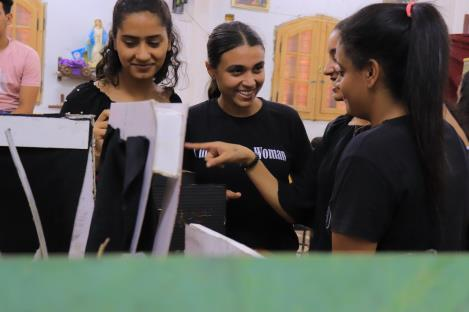
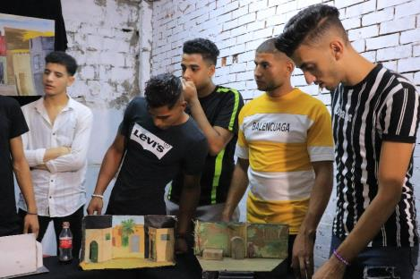
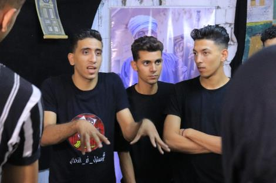

بهيجة
مع فرقة خلطبيطة · البياضية – ملوي
عرض يتناول قصة بهيجة، وكيف أدى البحث عن الآثار إلى تدمير حياتها.
A story about Bahiga and how the search for antiquities destroyed her life.
مشروع يضع التراث القروي في قلب العملية الفنية، من البحث الميداني والتدريب داخل القرى، إلى إنتاج العروض وصناعة السينوغرافيا المستوحاة من تفاصيل الحياة اليومية.
A project that places rural heritage at the heart of artistic practice — from field research and village-based training to performance production and scenography inspired by everyday life.
في كل دورة، يتحرك المشروع في المسار نفسه: نذهب إلى القرى، نتعلم ونُدرّب، ننتج الفن، ثم نعود بالنتاج إلى الجمهور.
Each edition follows the same journey: entering the villages, learning and training, creating art, then bringing the results back to the audience.
الاقتراب من المجتمعات المحلية، الاستماع إلى الناس، واكتشاف الحكايات والتراث والاحتياجات الفنية.
Meeting local communities, listening to people, and discovering stories, heritage and artistic needs.
نقل التدريب الفني إلى القرية نفسها، وفتح مساحات جديدة للتعلم والممارسة.
Bringing artistic training directly into the village and creating new spaces for learning and practice.
تحويل الحكايات والتجارب المحلية إلى أعمال فنية نابعة من المجتمع نفسه.
Transforming local stories and experiences into artistic works created with the community.
تحويل تفاصيل العمارة والحياة الريفية إلى رؤى بصرية وماكيتات مستوحاة من القرى.
Transforming rural architecture and everyday life into visual ideas and scenographic models inspired by the villages.
البداية كانت من القرى؛ من البحث في تفاصيل الحياة اليومية، إلى التدريب، ثم تحويل الحكايات المحلية إلى عروض مسرحية وسينوغرافيا مستوحاة من التراث القروي.
The journey began in the villages — from exploring everyday life to training, then transforming local stories into theatre performances and scenography inspired by rural heritage.
زيارة ميدانية إلى 10 قرى.
Field visits to 10 villages.
مجموعة من التدريبات الفنية التي مهدت لإنتاج الأعمال.
A series of artistic training sessions leading into production.
تدريب وتكوين مجموعة من أبناء القرية للعمل على إنتاج عرض مستوحى من حكايات المجتمع.
تدريب مجموعة من أبناء القرية وتطوير تجربة فنية مرتبطة بالتراث المحلي.
تدريب أبناء القرية وتطوير حكاية مستوحاة من العادات والتقاليد والحياة الريفية.
ثلاث حكايات خرجت من القرى إلى خشبة المسرح.
Three stories moved from the villages to the stage.
عرض يتناول قصة بهيجة، وكيف أدى البحث عن الآثار إلى تدمير حياتها.
A story about Bahiga and how the search for antiquities destroyed her life.

عرض غنائي يحكي عن حفيد يبحث عن كنز، وتدله جدته على طريق الوصول إليه.
A musical performance about a grandson searching for a treasure, guided by his grandmother.

عرض كوميدي يتناول عادات وتقاليد مجتمع الريف من خلال مجموعة من المواقف والحكايات المستوحاة من الحياة اليومية.
A comedy exploring rural traditions and customs through situations inspired by everyday village life.
تحويل تفاصيل القرى وذاكرتها البصرية إلى ماكيتات ومشروعات سينوغرافية.
Transforming village details and visual memory into scenographic models and concepts.






شاهد ملخص فعاليات النسخة الأولى من مشروع صحارة.
Watch the highlights of the first Sahara edition.
في الدورة الثانية، اتسع نطاق المشروع ليصل إلى أكثر من 10 قرى، مع تطوير نموذج المعسكرات التدريبية داخل القرى وربط الفنون بالتراث المحلي.
In its second edition, the project expanded to more than 10 villages, developing a village-based camp model that connects artistic practice with local heritage.
زيارة ميدانية إلى أكثر من 10 قرى للتعرف على المجتمعات المحلية وتحديد الاحتياجات التدريبية والفنية.
Field visits to more than 10 villages to understand local communities and identify artistic and training needs.
اعتمدت الدورة الثانية على معسكرات تدريبية داخل القرى، يقدم كل معسكر حزمة متكاملة من التدريبات الفنية.
The second edition adopted village-based training camps, with each camp offering an integrated set of artistic workshops.
في كل معسكر، يجتمع المشاركون حول مجموعة من المجالات الفنية التي تساعدهم على اكتشاف قدراتهم، والتعبير عن تراثهم، وتحويل الحكايات المحلية إلى مادة فنية.
Each camp brings participants together around different artistic disciplines, helping them discover their abilities, express their heritage and transform local stories into artistic material.
معسكر تدريبي تضمن تدريبات في الغناء من تراث القرية، الحكي، والتمثيل المسرحي.
A training camp including singing from village heritage, storytelling and acting.
معسكر تدريبي بمجموعة من الورش المتنوعة المستندة إلى التراث القروي وحكايات أهل القرية.
A training camp with diverse workshops rooted in rural heritage and the stories of the village.
معسكر تدريبي لتطوير المهارات الفنية وربطها بالتراث والحياة اليومية للقرية.
A training camp developing artistic skills and connecting them with village heritage and everyday life.
مرحلة تحويل التدريب والحكايات المحلية إلى إنتاجات فنية نابعة من القرى.
Transforming training and local stories into artistic productions emerging from the villages.
على مدار يومي 17 و18 أكتوبر 2025، تحولت ماكيتات المشاهد المسرحية إلى نوافذ بصرية تطل على روح الحياة القروية.
On October 17–18, 2025, theatrical scenography models became visual windows into the spirit of rural life.

قدمت مهندستا الديكور ماريا زكريا وماري يوسف التصميم والتنفيذ الكامل للمعرض، مستلهمتين من تفاصيل العمارة الشعبية والحياة اليومية في الريف المصري.
Set designers Maria Zakaria and Mary Youssef created and executed the exhibition, inspired by vernacular architecture and everyday rural life in Egypt.